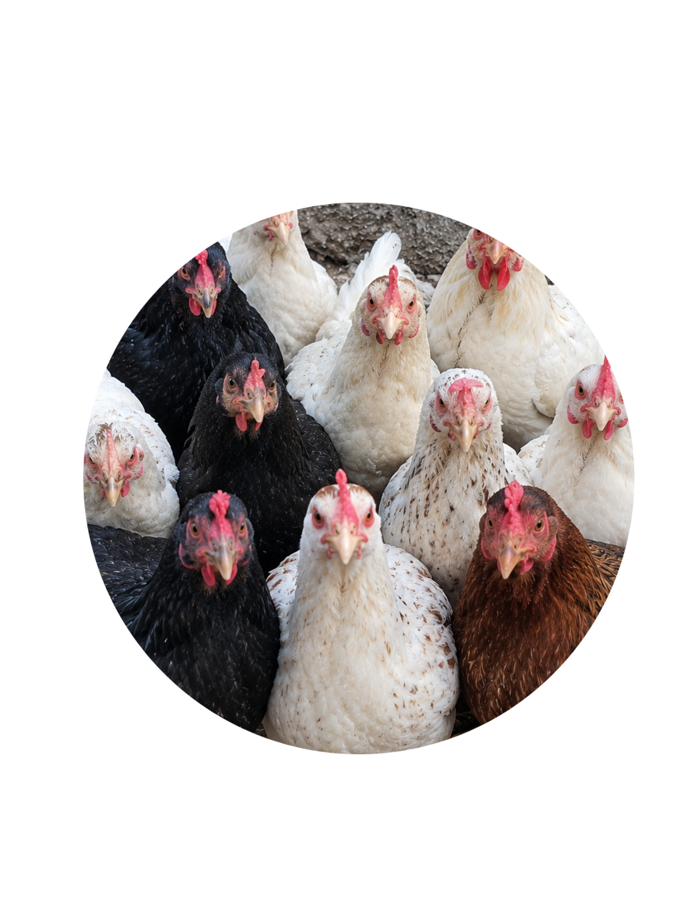
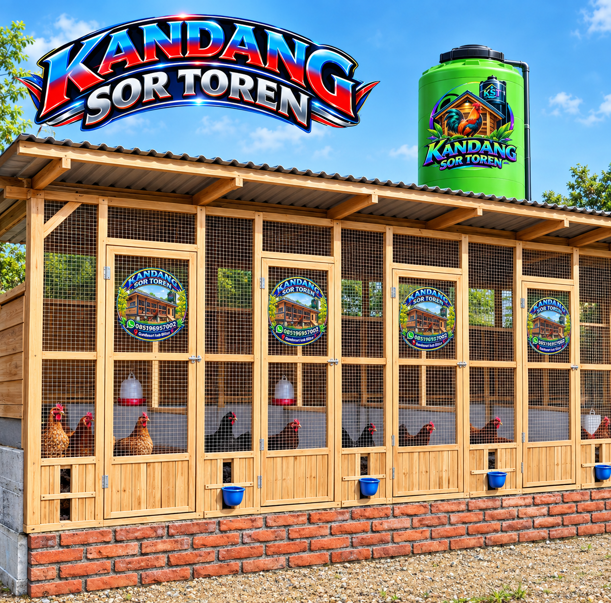
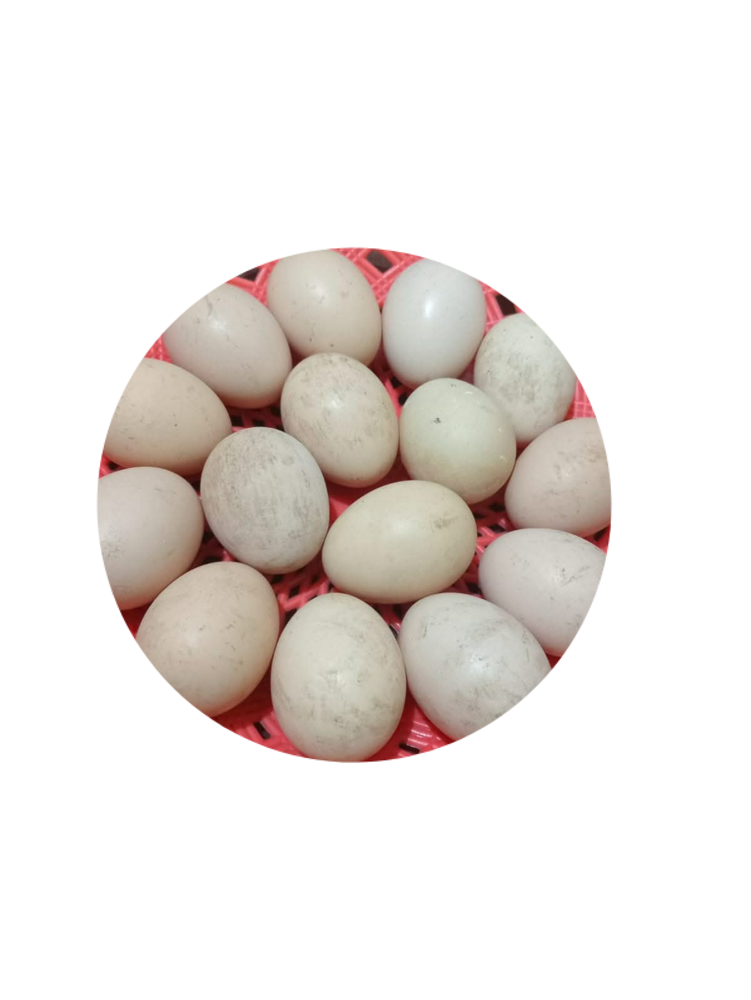
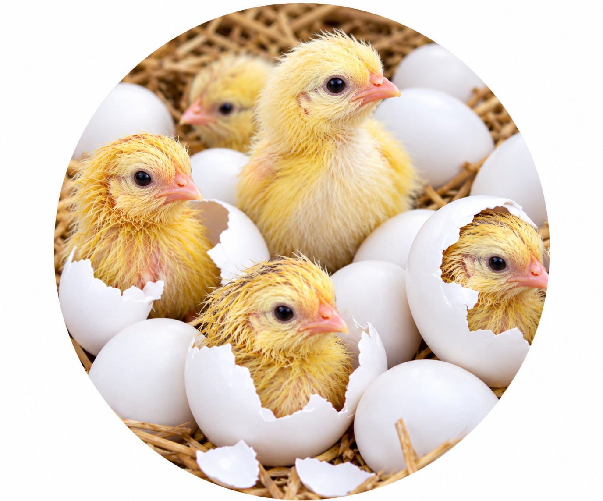

Peternakan ayam yang menyediakan ayam dan telur dengan perhatian terhadap kualitas serta perawatan.

Mengenal lebih dekat kegiatan peternakan Kandang Sor Toren.

Kandang Sor Toren merupakan peternakan ayam yang berfokus pada pemeliharaan ayam serta produksi telur.
Dengan kandang yang tertata, kebersihan dan perawatan ayam menjadi bagian penting dalam kegiatan peternakan.
Website ini dibuat sebagai media informasi untuk mengenalkan Kandang Sor Toren dan produk yang tersedia.
Beberapa produk yang berkaitan dengan kegiatan peternakan Kandang Sor Toren.

Telur ayam dari peternakan Kandang Sor Toren.
Ayam yang dipelihara di Kandang Sor Toren.

Perawatan ayam dimulai sejak fase awal pertumbuhan. Anak ayam membutuhkan perhatian, pakan, air minum, dan lingkungan yang sesuai.
Tempat pemeliharaan ayam Kandang Sor Toren.
Kandang menjadi bagian penting dalam kegiatan peternakan. Penataan kandang membantu proses pemeliharaan ayam sehari-hari.
Kandang Sor Toren terus mengutamakan perawatan dan pengelolaan kandang sebagai bagian dari kegiatan peternakan.
Beberapa hal penting dalam kegiatan pemeliharaan ayam.
Perawatan ayam menjadi bagian utama kegiatan peternakan.
Telur merupakan salah satu hasil dari kegiatan peternakan ayam.
Kandang yang tertata membantu proses pemeliharaan ayam.
Untuk informasi lebih lanjut, silakan hubungi kami melalui WhatsApp.
💬 Hubungi via WhatsApp